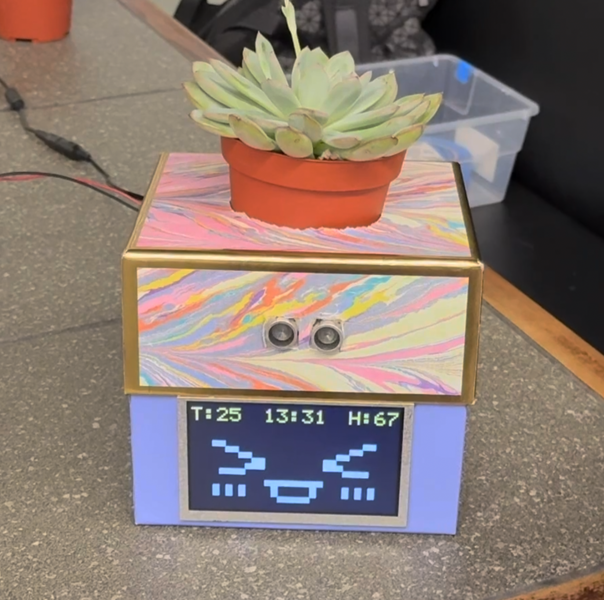

Project Information
Team Name: Moodo
Team Members: Houjie Xiong, Yisen Li, Zhihui Wang
GitHub Repository URL: https://github.com/upenn-embedded/final-project-website-submission-f25-t03-f25-moodo.git
GitHub Pages Website URL: https://upenn-embedded.github.io/final-project-website-submission-f25-t03-f25-moodo/
Description of Hardware: ATmega328PB
1. Video
2. Images

Course Website Thumbnail
The following image will be used for the course website.
3. Results
3.1 Software Requirements Specification (SRS) Results
| ID | Description | Validation Outcome |
|---|---|---|
| SRS-01 | If a user remains within ≤60 cm for ≥1 hour, play a reminder (timer-based; cadence error ≤±5s). | Confirmed. The RTC has been validated with a 1 s/hour cadence error which meet our requirement, and the system successfully triggers a voice reminder when the user stays nearby for an extended period. |
| SRS-02 | The LCD provides a face page and a data page; data page shows temperature, humidity, and time (page switch + data refresh period ≤2 s). | Confirmed. Temperature and humidity readings update accurately, and the data refresh cycle is now 1 second. |
| SRS-03 | When lux falls below the “night” threshold, enter Night Mode and play a “good-night” prompt (configurable threshold; state-change hysteresis ≤2 s; false triggers ≤1/hour). | Confirmed. The system now reliably detects light-intensity changes and transitions into Night Mode as expected. |
Real-Time Clock (RTC): To verify the accuracy of the RTC, we used a smartphone clock as the reference time source. Across three separate one-hour tests, the RTC’s drift remained within ±1 second per hour, which meets our timing precision requirement.
Light Intensity Sensor: We evaluated the light sensor by manually blocking it with a finger and observing its response to sudden changes in illumination—it reacted instantly. We also turned off all room light sources to simulate nighttime conditions. Under these conditions, the analog reading consistently dropped below 300, so we set 300 as the threshold between “day mode” and “night mode.” This threshold is stable and repeatable across our tests.
Temperature and Humidity Sensor: Although we lack laboratory-grade equipment for absolute accuracy validation, we verified the sensor qualitatively. The readings remained stable and reasonable during normal operation. When a finger was brought close to the sensor, both temperature and humidity increased gradually, as expected. However, we currently cannot quantify the measurement error or test cold-side accuracy.
Ultrasonic (Distance Sensor): We tested the ultrasonic sensor at multiple distance ranges: 10–50 cm, 50–100 cm, and 100–200 cm.
- At 10–50 cm, performance was excellent with errors within ±3 cm.
- At 50–100 cm, errors increased to 5–15 cm.
- At 100–200 cm, the error margin grew to 20–30 cm. These results match the typical behavior of low-cost ultrasonic modules, where accuracy decreases with distance.
3.2 Hardware Requirements Specification (HRS) Results
| ID | Description | Validation Outcome |
|---|---|---|
| HRS-01 | Use ATmega328PB Xplained Mini @16 MHz with at least 1×TWI, 1×UART, ADC, and a 16-bit timer/input-capture. | Confirmed. |
| HRS-02 | One TRIG and one ECHO routed to MCU digital I/O and timer input-capture (20–200 cm average error ≤±2 cm). | Confirmed. |
| HRS-03 | Mini MP3 module + microSD, UART-controlled, feeding a small power amp and speaker (≥70 dB SPL at 1 m; UART BER ≤10⁻⁵). Confirmed. | Achieved. (no micro SD need, soundboard has a 16MB flash) |
| HRS-04 | 0.96″ OLED (I²C or SPI) for face/data pages; status LEDs for network/fault (readable from 0–40 °C). | Confirmed. We upgrade to a 5.0" LCD display |
4. Conclusion
Our project “The Electronic Plant” aims to use sensor technology, such as light sensing, humidity, vibration, ultrasonic sensors, etc., to transform ordinary plants into electronic pets that can interact with people. Our core features include: when a person walks up to our e-pet it plays a greeting, if you stay nearby for a while it gently reminds you to stand up and move around, and if you leave for some time it says it’s going to sleep. We also implemented facial expression changes and an automatic watering function based on the overall air humidity.
Throughout the project, we learned a lot about integrating multiple sensors and modules into a cohesive system. We faced challenges in ensuring reliable communication between components and managing power consumption effectively. We are proud of achieving smooth integration across multiple subsystems—sensing, audio, display, and user interaction. We successfully ran the RTC and SHT40 on a shared I²C bus, implemented responsive voice-line logic, and designed six emotion expressions mapped to real environmental conditions. Most importantly, we solved a major SRAM overflow issue by moving all bitmap data into Flash (PROGMEM), allowing the TFT screen to display both text and emoticons reliably. This debugging and system-level optimization was a significant accomplishment for our team.
Our enclosure must be waterproof, because unlike many other projects, our system includes an active watering mechanism. Even a single drop of water contacting the exposed circuit or metal connections could cause short-circuiting and permanently damage the electronics. Therefore, it is essential for us to design a safe, sealed, and reliable protective enclosure that prevents water while still maintaining a clean, simple, and appealing appearance. In addition, we plan to eliminate the use of breadboards and jumper wires, as they are prone to loose connections and are not suitable for long-term stability. We transition to more secure and permanent wiring solutions to ensure robustness and safety in the final system.
5. Reference
Adafruit_RA8875.cpp
Adafruit_RA8875.h